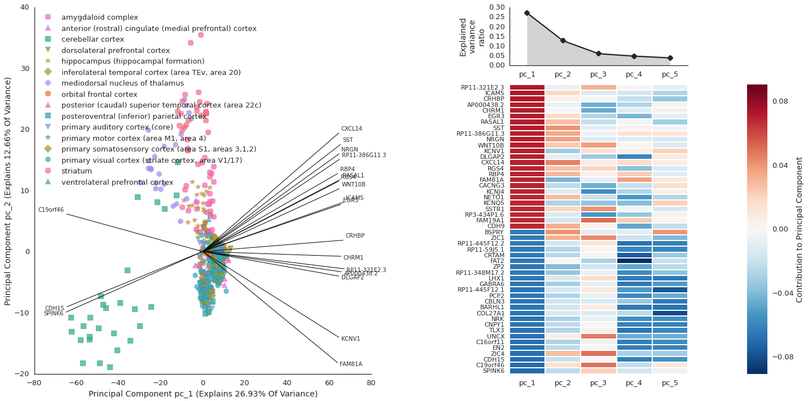
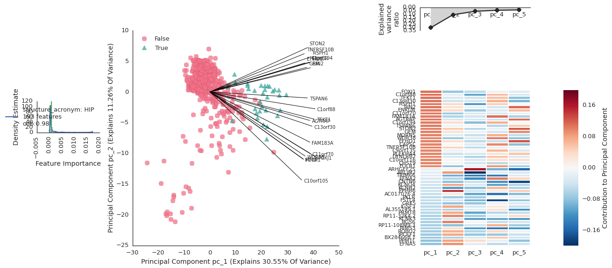

Hypothesis: The human brain uses different genes in different regions¶
The data: Allen Brain Institute¶
Disclaimer: I am not a neuroscientist, and my understanding of brain anatomy is very rudimentary, so please bear with me.
We will use the **BrainSpan Atlas of the Developing Human Brain**, which was an effort to establish molecular profiles of brain regions at varying points of developmental time.
- 42 brain specimens, male and female
- 13 developmental stages: post-conception week (pcw) 5-7 to 42 years old
RNA sequencing is accomplished by shattering RNA transcripts, then finding where they are in the genome¶
### Illumina sequencing machines

{kind=link}
Load the data into flotilla via embark¶
%matplotlib inline
import flotilla
study = flotilla.embark(flotilla._brainspan)
Creating a directory for saving your flotilla projects: /home/travis/flotilla_projects Creating a directory for saving the data for this project: /home/travis/flotilla_projects/brainspan_filtered_and_markers_amazon
https://s3-us-west-2.amazonaws.com/flotilla/brainspan_batch_corrected_for_amazon_s3/datapackage.json has not been downloaded before.
Downloading now to /home/travis/flotilla_projects/brainspan_filtered_and_markers_amazon/datapackage.json
2015-05-28 19:17:44 Parsing datapackage to create a Study object
https://s3-us-west-2.amazonaws.com/flotilla/brainspan_batch_corrected_for_amazon_s3/expression_feature.csv has not been downloaded before.
Downloading now to /home/travis/flotilla_projects/brainspan_filtered_and_markers_amazon/expression_feature.csv
https://s3-us-west-2.amazonaws.com/flotilla/brainspan_batch_corrected_for_amazon_s3/expression.csv has not been downloaded before.
Downloading now to /home/travis/flotilla_projects/brainspan_filtered_and_markers_amazon/expression.csv
https://s3-us-west-2.amazonaws.com/flotilla/brainspan_batch_corrected_for_amazon_s3/metadata.csv has not been downloaded before.
Downloading now to /home/travis/flotilla_projects/brainspan_filtered_and_markers_amazon/metadata.csv
2015-05-28 19:18:02 Initializing Study
2015-05-28 19:18:02 Initializing Predictor configuration manager for Study 2015-05-28 19:18:02 Predictor ExtraTreesClassifier is of type2015-05-28 19:18:02 Added ExtraTreesClassifier to default predictors 2015-05-28 19:18:02 Predictor ExtraTreesRegressor is of type 2015-05-28 19:18:02 Added ExtraTreesRegressor to default predictors 2015-05-28 19:18:02 Predictor GradientBoostingClassifier is of type 2015-05-28 19:18:02 Added GradientBoostingClassifier to default predictors 2015-05-28 19:18:02 Predictor GradientBoostingRegressor is of type 2015-05-28 19:18:02 Added GradientBoostingRegressor to default predictors 2015-05-28 19:18:02 Loading metadata 2015-05-28 19:18:02 Loading expression data
2015-05-28 19:18:02 Initializing expression 2015-05-28 19:18:03 Done initializing expression
2015-05-28 19:18:08 Successfully initialized a Study object!
:0: FutureWarning: IPython widgets are experimental and may change in the future.
A look behind the magic¶
flotilla._brainspan is a link to a JSON file:
flotilla._brainspan
'https://s3-us-west-2.amazonaws.com/flotilla/brainspan_batch_corrected_for_amazon_s3/datapackage.json'
This json follows the datapackage specification as outlined by the Open Knowledge foundation.
! curl https://s3-us-west-2.amazonaws.com/flotilla/brainspan_batch_corrected_for_amazon_s3/datapackage.json
{
"name": "brainspan_filtered_and_markers_amazon",
"title": null,
"datapackage_version": "0.1.5",
"sources": null,
"licenses": null,
"resources": [
{
"name": "expression_feature",
"format": "csv",
"rename_col": "gene_symbol",
"ignore_subset_cols": [
"gene_id",
"gene_symbol",
"entrez_id"
],
"url": "https://s3-us-west-2.amazonaws.com/flotilla/brainspan_batch_corrected_for_amazon_s3/expression_feature.csv"
},
{
"name": "expression",
"log_base": 2,
"format": "csv",
"thresh": -Infinity,
"plus_one": true,
"path": "https://s3-us-west-2.amazonaws.com/flotilla/brainspan_batch_corrected_for_amazon_s3/expression.csv"
},
{
"pooled_col": "pooled",
"name": "metadata",
"phenotype_to_marker": {
"M1C": "^",
"DTH": "D",
"A1C": "o",
"TCx": "s",
"VFC": "v",
"Ocx": "o",
"V1C": "s",
"HIP": "*",
"PCx": "^",
"MFC": "v",
"CBC": "s",
"CGE": "*",
"AMY": "^",
"OFC": "*",
"STC": "o",
"URL": "v",
"CB": "v",
"STR": "^",
"S1C": "D",
"DFC": "v",
"MD": "s",
"MGE": "s",
"M1C-S1C": "^",
"ITC": "o",
"LGE": "o",
"IPC": "D"
},
"format": "csv",
"minimum_samples": 0,
"phenotype_to_color": {
"M1C": "#34af87",
"DTH": "#a0a131",
"A1C": "#f77189",
"TCx": "#f35cf4",
"VFC": "#f66da6",
"Ocx": "#3aa5e2",
"V1C": "#f668be",
"HIP": "#8da631",
"PCx": "#639df4",
"MFC": "#36abb0",
"CBC": "#d38d32",
"CGE": "#c19632",
"AMY": "#f77461",
"OFC": "#39a8cc",
"STC": "#b486f4",
"URL": "#f563d7",
"CB": "#eb8032",
"STR": "#d276f4",
"S1C": "#9292f4",
"DFC": "#b19c32",
"MD": "#36ada4",
"MGE": "#37aabd",
"M1C-S1C": "#35ae97",
"ITC": "#31b332",
"LGE": "#33b16f",
"IPC": "#71ac31"
},
"outlier_col": "outlier",
"url": "https://s3-us-west-2.amazonaws.com/flotilla/brainspan_batch_corrected_for_amazon_s3/metadata.csv",
"phenotype_col": "structure_acronym",
"phenotype_order": [
"A1C",
"AMY",
"CB",
"CBC",
"CGE",
"DFC",
"DTH",
"HIP",
"IPC",
"ITC",
"LGE",
"M1C",
"M1C-S1C",
"MD",
"MFC",
"MGE",
"OFC",
"Ocx",
"PCx",
"S1C",
"STC",
"STR",
"TCx",
"URL",
"V1C",
"VFC"
]
},
{
"name": "supplemental",
"resources": []
}
]
}
2.) A string that is a name of a folder in "~/flotilla_projects". If you use this study here, change something, and want to keep it around for later, you can use study.save('project_name') and then embark on it later with flotilla.embark('project_name').
Model-Compute-View-Controller¶
Modified image of MVC
labeled: * Model = pandas * Compute = scikit-learn * View = matplotlib, seaborn * controller = IPython notebook + widgets
Back to the hypothesis: The human brain has different genes expressed in different regions¶
To address the question of how the expression varies across regions, we will Principal component analysis.
Principal Component Analysis (PCA)¶
Principal Component Analysis (PCA) is a dimensionality reduction algorithm which transforms a high-dimensional space like gene expression, to smaller dimensions, like just two for x- y- plotting.

pcaviz = study.plot_pca(color_samples_by='structure_name')
pcaviz.fig_reduced.savefig('brainspan_pca.pdf')
/home/travis/miniconda/envs/testenv/lib/python2.7/site-packages/pandas/core/index.py:834: FutureWarning: slice indexers when using iloc should be integers and not floating point "and not floating point",FutureWarning) /home/travis/miniconda/envs/testenv/lib/python2.7/site-packages/matplotlib/font_manager.py:1282: UserWarning: findfont: Font family [u'Helvetica', u'Arial'] not found. Falling back to Bitstream Vera Sans (prop.get_family(), self.defaultFamily[fontext]))
Hmm, all those non-cerebellar cortex, non-striatum samples are really stacked on top of each other. What if we want to pull out genes that are associated with a particular structure, like the hippocampus?
# # Cerebellum markers from http://www.nature.com/nrn/journal/v16/n2/fig_tab/nrn3886_F3.html
cerebellar_markers = ['ALDOC', 'PLCB3', 'SLC1A6', 'GABBR2', 'NCS1', 'PLCB4', 'GRM1', 'MAP1A', 'NPTN', 'NRGN']
for gene in cerebellar_markers:
study.plot_gene(gene)
Hypothesis: Cells in the hippocampus use genes unique to its function¶
The hippocampus is involved in memory, and we hypothesize that these cells have a unique molecular profile (set of genes that are expresssed). To accomplish this, we will use a classifier on our data to identify genes which separate hippocampal samples from non-hippocampal samples.
By default, flotilla uses an “Extremely Randomised Trees” Classifier (ExtraTreesClassifier), which takes random subsets of the data many times to create decision trees, like this one for deciding whether to play outside:

study.plot_classifier('structure_acronym: HIP', feature_subset='all features')
2015-05-28 19:19:09 Configuring predictor type: ExtraTreesClassifier with 14321 featuresFitting a predictor for X:none_all features, y:structure_acronym: HIP, method:ExtraTreesClassifier... please wait.
[Parallel(n_jobs=4)]: Done 1 out of 201 | elapsed: 0.0s remaining: 7.6s [Parallel(n_jobs=4)]: Done 717 out of 717 | elapsed: 5.1s finished
Finished.

- Choose trait as “structure_acronym: HIP”
- Choose features as “all features”
Cilia are important for memory development¶
FOXJ1, C1orf88, TEKT1 are all involved in development of cilia, fingerlike protrusions from cells. Development of these cilia has been show to be important in memory formation.
So it looks like our classifier picked up the right things!